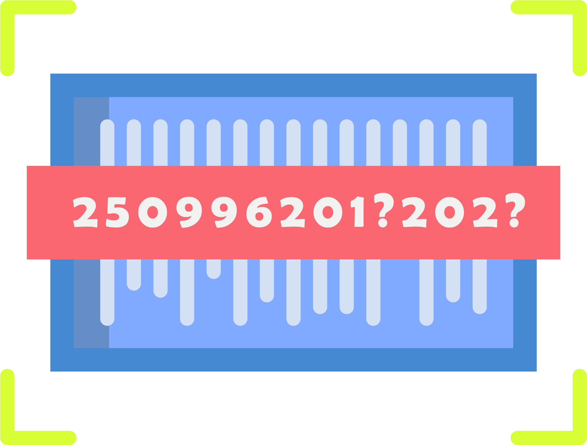

<ion-content>
  <ion-slides pager="true" class="ion-padding">

    <ion-slide>
      <div class="slide">
        
        <h2>Bienvenue sur <ion-text color="primary"><b>LostButFind</b></ion-text></h2>
        <p>Enfin une <b>solution</b> pour vous aidez a retrouvez vos objets perdus en toute simplicité grace à notre application intuitive. Coullisez vers la droite pour voir nos options.</p>
      </div>
    </ion-slide>

    <ion-slide>
      
      <h2>Que faisons nous ?</h2>
      <p><b>LostButFind</b> est un service permettant de facilité la mis en relation de ceux qui trouve des objets et ceux les aillants egaré et sa de façon sécurisé et totalement confidentiel.</p>
    </ion-slide>

    <ion-slide>
      
      <h2>Comment ça marche ?</h2>
      <p><b>LostButFind</b> permet de rechercher les objets portant une identification unique (tel que une carte d'identité) ou non (nous procurons des stickers d'itentification) dans sa base de donnée enrichie grace aux utilisateurs l'ayant retrouvé.</p>
    </ion-slide>

    <ion-slide>
      
      <h2>Etes vous prêt ?</h2>
      <p><b>Alors</b> identifier vous pour commencer...</p>
      
      <ion-button mode="ios" style="font-weight: lighter;" routerLink="../register" shape="round" class="ion-margin-bottom">Démarrer avec LostButFind</ion-button>
      <div> <ion-label><a routerLink="../login" class="ion-margin-vertical">J'ai déja un compte</a></ion-label> </div>

    </ion-slide>

  </ion-slides>

</ion-content>
